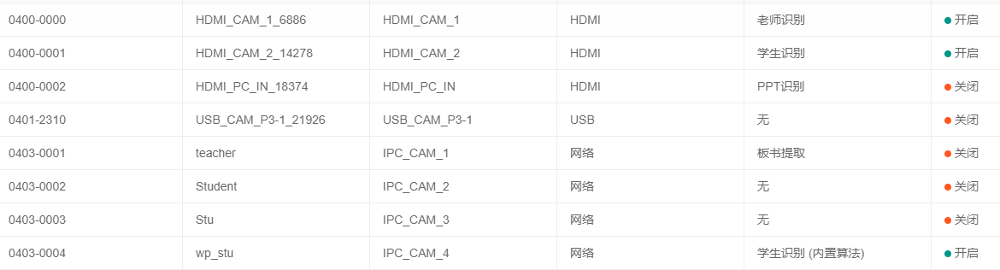
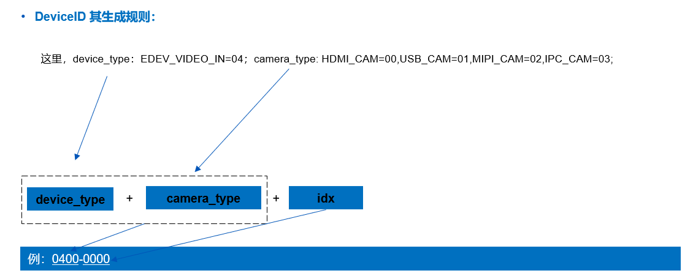

5.1. 环境类
5.1.1 本地管理页面配置摄像头
本地管理页面： http://{小站IP地址}:8080
账户名：
admin密码：
z150@2022根据需求将对应的摄像头配上相应算法，详细配置过程可以参考
Metis Station Z500 用户手册5.2.1 本机登录章节内容 。相应摄像头配上算法可以参考下图所示

5.1.2 Media Agent API文档
MA API 文档下载处:
Download
5.1.3 不同类型摄像头DeviceId命名规则

Example:
HDMI类型摄像头 : HDMI_CAM_1 —> 0400-0000
IPC网络摄像头 : IPC_CAM_1 —> 0403-0001
USB类型摄像头 : USB_CAM_P3-1—> 0401-2310